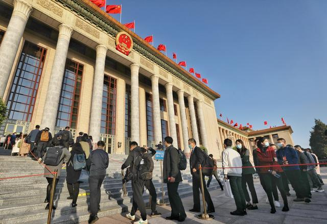
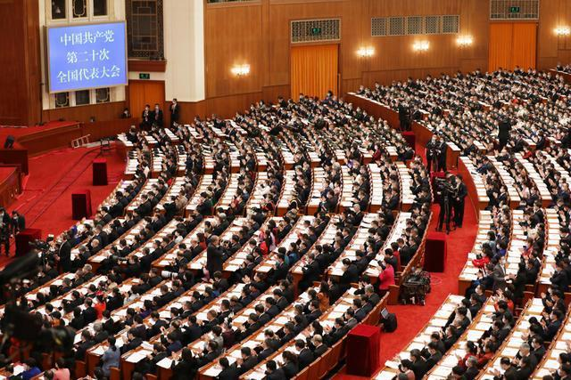
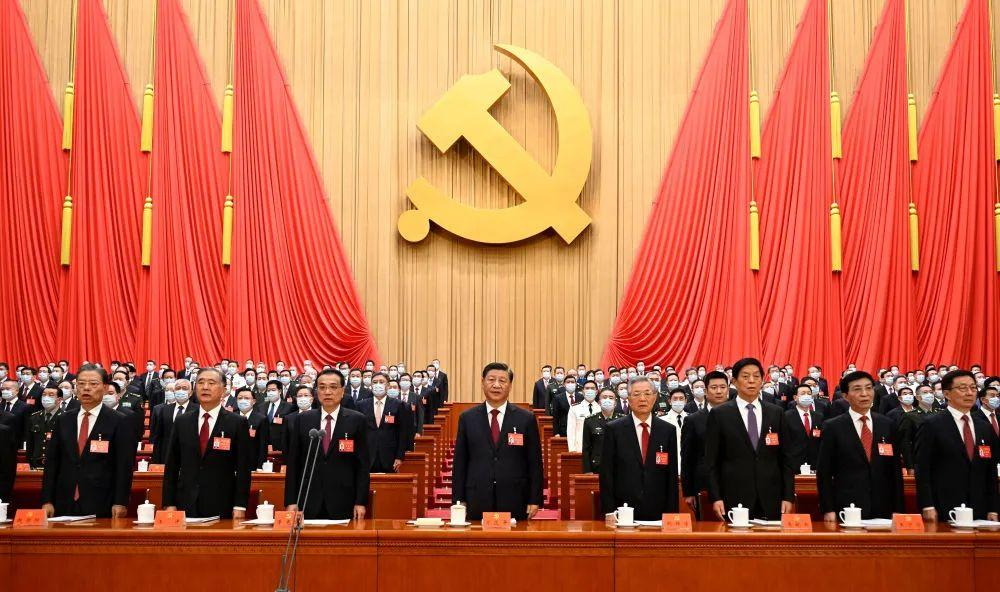
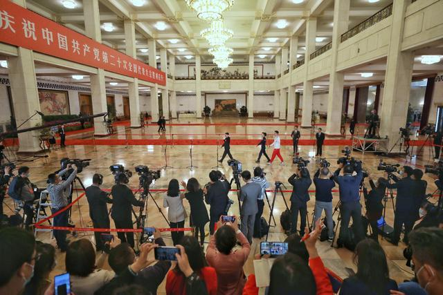
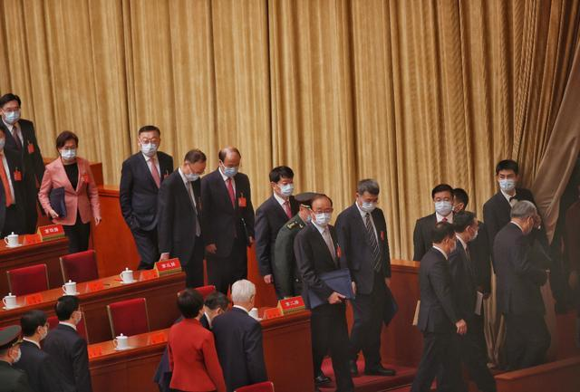
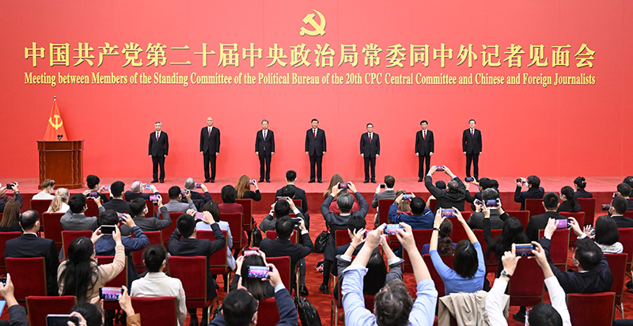

回顶部
- 
- 
- 
- 
- 
- 认真学习宣传贯彻党的二十大精神
- 新时代 新征程 争出彩
- 学报告 悟思想 开新局
- 高举中国特色社会主义伟大旗帜 全面建设社会主义现代化国家
- 人民有信仰 国家有力量 民族有希望
- 永远把人民对美好生活的向往作为奋斗目标
- 为人民谋幸福 为民族谋复兴 为世界谋大同
- 举旗帜 聚民心 育新人 兴文化 展形象
- 增强实现中华民族伟大复兴的精神力量
- 人民是党执政兴国的最大底气
- 团结奋进新征程 凝心聚力谱新篇
- 以中国式现代化全面推进中华民族伟大复兴
- 加快构建新发展格局 着力推动高质量发展
- 发展全过程人民民主 保障人民当家作主
- 坚持全面依法治国 推进法治中国建设
- 推动绿色发展 促进人与自然和谐共生
- 增进民生福祉 提高人民生活品质
- 自信自强 守正创新 踔厉奋发 勇毅前行
- 促进世界和平与发展 推动构建人类命运共同体
- 贯彻新发展理念是新时代我国发展壮大的必由之路
- 实施科教兴国战略，强化现代化建设人才支撑
- 旗帜决定方向 道路决定命运
- 奋进新征程 建功新时代
- 传承红色基因 赓续精神血脉
深入学习贯彻习近平新时代中国特色社会主义思想
 |
2月7日，新进中央委员会的委员、候补委员和省部级主要领导干部学习贯彻习近平新时代中国特色社会主义思想和党的二十大精神研讨班在中央党校（国家行政学院）开班。中共中央总书记、国家主席、中央军委主席习近平在开班式上发表重要讲话。 |
|
习近平：始终坚持一切为了人民一切依靠人民 以中国式现代化全面推进中华民族伟大复兴 10月23日，刚刚在中国共产党第二十届中央委员会第一次全体会议上当选的中共中央总书记习近平和中共中央政治局常委李强、赵乐际、王沪宁、蔡奇、丁薛祥、李希在北京人民大会堂同采访中共二十大的中外记者亲切见面。这是习近平发表重要讲话。 |
|
 |
10月23日，刚刚在中国共产党第二十届中央委员会第一次全体会议上当选的中共中央总书记习近平和中共中央政治局常委李强、赵乐际、王沪宁、蔡奇、丁薛祥、李希在北京人民大会堂同采访中共二十大的中外记者亲切见面。 |
|
10月23日，中国共产党第二十届中央委员会第一次全体会议在北京人民大会堂举行。习近平同志主持会议并在当选中共中央委员会总书记后作重要讲话。 |